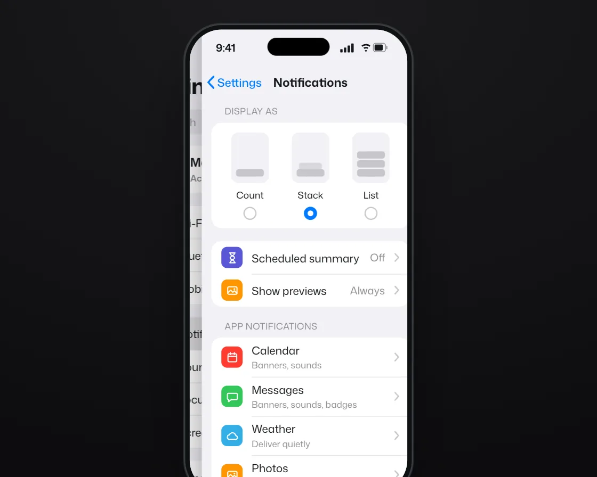

Push slide
Push slide is a DOM effect: the new screen pushes; the old one drifts slower. One plain JavaScript file with no dependencies; add it with npx motion-library add push-slide.

Open it live, tune it and copy the code
What is Push slide?
In phone Settings, Notifications pushes in from the right and Back slides it out again.
How does Push slide work?
The new screen travels the full width while the old one moves 30% and dims, on one iOS-style curve; the speed difference reads as depth.
How do I add Push slide to my website?
- In your project folder, run
npx motion-library add push-slide. It writesanimations/push-slide.js. Needs Node 18 or newer. - Import it and call it with a container element that has a size:
import fx from './animations/push-slide.js'; const stop = fx(document.querySelector('#hero')); - Call
stop()to clean up, for example when a component unmounts.
Every setting below is also a flag, so you can install it already tuned: npx motion-library add push-slide --duration 1500.
What settings can I tweak?
| Setting | Flag | Default | Range | Step |
|---|---|---|---|---|
| Duration (ms) | --duration | 500 | 200 to 1500 | 10 |
| Parallax | --parallax | 0.3 | 0 to 1 | 0.05 |
Specifications
- Renderer
- DOM (CSS and the Web Animations API)
- Category
- Page transitions
- Dependencies
- None
- File size
- 13.1 KB, unminified
- Interactive
- No: it plays on its own
- Reduced motion
- Respects prefers-reduced-motion
- Licence
- MIT-0: use it anywhere, no credit needed
Source code
// Push slide: in a phone's Settings app, tapping Notifications pushes the new screen in from the right while the list drifts only part of the way and dims; Back reverses it.
// The incoming screen moves the full width but the old one moves less, and that difference in speed reads as depth. Both share one curve so they feel physically joined, and going back retraces the same path.
const PARAMS = { duration: 500, parallax: 0.3 };
export default function (stage) {
const reduce = matchMedia('(prefers-reduced-motion: reduce)').matches;
const ic = {
wifi: '<path d="M3.5 9.5a12 12 0 0 1 17 0M7 13a7 7 0 0 1 10 0M10.2 16.4a2.6 2.6 0 0 1 3.6 0"/><circle cx="12" cy="19.2" r="1.2" fill="#fff" stroke="none"/>',
bt: '<path d="M7.5 7.5l9 9L12 20.5V3.5l4.5 4-9 9"/>',
data: '<path d="M12 21V10M8.2 5.8a5.5 5.5 0 0 0 0 7.8M15.8 5.8a5.5 5.5 0 0 1 0 7.8"/><circle cx="12" cy="9.7" r="1.4" fill="#fff" stroke="none"/>',
bell: '<path d="M6.5 16v-4.5a5.5 5.5 0 0 1 11 0V16l1.5 2h-14zM10 20.5a2 2 0 0 0 4 0"/>',
sound: '<path d="M4 9.5h3.5L12 6v12l-4.5-3.5H4zM15.5 9.5a3.5 3.5 0 0 1 0 5M18 7a7 7 0 0 1 0 10"/>',
moon: '<path d="M18.5 14.5a7 7 0 1 1-9-9 5.6 5.6 0 0 0 9 9z" fill="#fff"/>',
glass: '<path d="M7 3.5h10M7 20.5h10M8.2 3.5c0 5 7.6 5.5 7.6 8.5s-7.6 3.5-7.6 8.5M15.8 3.5c0 5-7.6 5.5-7.6 8.5s7.6 3.5 7.6 8.5"/>',
gear: '<circle cx="12" cy="12" r="3.2"/><path d="M12 3.5v2.6M12 17.9v2.6M3.5 12h2.6M17.9 12h2.6M6 6l1.8 1.8M16.2 16.2L18 18M6 18l1.8-1.8M16.2 7.8L18 6"/>',
sun: '<circle cx="12" cy="12" r="3.6"/><path d="M12 3.5v2M12 18.5v2M3.5 12h2M18.5 12h2M6 6l1.4 1.4M16.6 16.6L18 18M6 18l1.4-1.4M16.6 7.4L18 6"/>',
cal: '<rect x="4.5" y="5.5" width="15" height="14" rx="2.5"/><path d="M4.5 10h15M8.5 3.5v3.5M15.5 3.5v3.5"/>',
msg: '<path d="M5 6h14a1.5 1.5 0 0 1 1.5 1.5v8A1.5 1.5 0 0 1 19 17h-9l-4.5 3.5V17H5a1.5 1.5 0 0 1-1.5-1.5v-8A1.5 1.5 0 0 1 5 6z"/>',
photo: '<rect x="4" y="5.5" width="16" height="13" rx="2.5"/><path d="M4 16l5-5 4 4 2.5-2.5L20 17"/><circle cx="15.5" cy="9.5" r="1.4" fill="#fff" stroke="none"/>',
cloud: '<path d="M7.5 18a4 4 0 0 1-.4-8 5.5 5.5 0 0 1 10.6 1.4A3.3 3.3 0 0 1 17 18z"/>',
};
const icon = (k, c) => `<span class="ps-ic" style="background:${c}"><svg viewBox="0 0 24 24" fill="none" stroke="#fff" stroke-width="1.9" stroke-linecap="round" stroke-linejoin="round">${ic[k]}</svg></span>`;
const chev = '<svg class="ps-chev" viewBox="0 0 8 14"><path d="M1.5 1.5L6.5 7l-5 5.5" fill="none" stroke="#c4c4c9" stroke-width="1.8" stroke-linecap="round" stroke-linejoin="round"/></svg>';
const row = (k, c, label, value = '', cls = '') => `<div class="ps-row ${cls}">${icon(k, c)}<span class="ps-lab">${label}</span><span class="ps-val">${value}</span>${chev}</div>`;
const row2 = (k, c, label, sub) => `<div class="ps-row ps-two">${icon(k, c)}<span class="ps-lab">${label}<small>${sub}</small></span>${chev}</div>`;
const root = document.createElement('div');
root.className = 'ps-root';
root.innerHTML = `<style>
.ps-root { position: absolute; inset: 0; overflow: hidden; background: radial-gradient(120% 100% at 50% 0%, #eef6f5, #d5e8e5); font-family: "Mona Sans", system-ui, -apple-system, sans-serif; color: #15171a; }
.ps-phone { position: absolute; left: 50%; top: 0; width: 280px; height: 580px; border-radius: 46px; background: #0f1113; box-shadow: inset 0 0 0 1.5px #2b2f34, 0 40px 80px -30px rgba(8,45,42,.45), 0 12px 30px -12px rgba(8,45,42,.3); transform-origin: 50% 0; }
.ps-screen { position: absolute; inset: 7px; border-radius: 39px; overflow: hidden; background: #f2f2f7; isolation: isolate; }
.ps-island { position: absolute; left: 50%; top: 17px; width: 76px; height: 22px; margin-left: -38px; border-radius: 12px; background: #000; z-index: 9; }
.ps-sb { position: absolute; left: 0; right: 0; top: 0; height: 44px; padding: 0 24px 0 32px; display: flex; align-items: center; justify-content: space-between; font-size: 13px; font-weight: 650; z-index: 8; pointer-events: none; }
.ps-page { position: absolute; inset: 0; background: #f2f2f7; padding-top: 44px; box-sizing: border-box; will-change: transform; }
.ps-dim { position: absolute; inset: 0; background: #000; opacity: 0; pointer-events: none; }
.ps-edge { position: absolute; top: 0; bottom: 0; left: -14px; width: 14px; background: linear-gradient(to left, rgba(0,0,0,.12), transparent); }
.ps-title { margin: 6px 16px 10px; font-size: 27px; font-weight: 750; letter-spacing: -0.02em; }
.ps-search { margin: 0 12px 14px; height: 30px; border-radius: 10px; background: #e3e3e8; display: flex; align-items: center; gap: 6px; padding: 0 9px; font-size: 13px; color: #8a8a8f; }
.ps-group { margin: 0 12px 16px; border-radius: 12px; background: #fff; overflow: hidden; }
.ps-row { position: relative; height: 40px; display: flex; align-items: center; gap: 11px; padding: 0 12px; font-size: 13.5px; }
.ps-row + .ps-row::before { content: ""; position: absolute; left: 49px; right: 0; top: 0; height: 1px; background: #e6e6ea; }
.ps-ic { flex: none; width: 26px; height: 26px; border-radius: 7px; display: grid; place-items: center; }
.ps-ic svg { width: 17px; height: 17px; }
.ps-lab { flex: 1; white-space: nowrap; }
.ps-lab small { display: block; margin-top: 1px; font-size: 11px; color: #8a8a8f; }
.ps-two { height: 48px; }
.ps-val { font-size: 13px; color: #8a8a8f; }
.ps-chev { width: 7px; height: 12px; flex: none; }
.ps-hl { position: absolute; inset: 0; background: #d1d1d6; opacity: 0; }
.ps-row > :not(.ps-hl) { position: relative; }
.ps-me { height: 58px; gap: 12px; }
.ps-av { width: 40px; height: 40px; border-radius: 50%; background: linear-gradient(135deg, #f0a17a, #d9603a); color: #fff; display: grid; place-items: center; font-size: 14px; font-weight: 700; flex: none; }
.ps-nav { position: relative; height: 40px; display: flex; align-items: center; justify-content: center; font-size: 14.5px; font-weight: 650; }
.ps-back { position: absolute; left: 6px; top: 0; height: 40px; display: flex; align-items: center; gap: 3px; color: #007aff; font-size: 14px; font-weight: 500; }
.ps-cap { margin: 8px 28px 6px; font-size: 11px; color: #8a8a8f; letter-spacing: .02em; }
.ps-styles { display: flex; justify-content: space-around; padding: 12px 10px 10px; }
.ps-styles div { display: grid; justify-items: center; gap: 6px; font-size: 11.5px; }
.ps-styles i { width: 46px; height: 62px; border-radius: 9px; background: #f2f2f7; position: relative; overflow: hidden; }
.ps-styles i b { position: absolute; left: 6px; right: 6px; height: 9px; border-radius: 3px; background: #c7c7cc; }
.ps-styles em { width: 16px; height: 16px; border-radius: 50%; box-shadow: inset 0 0 0 1.5px #c7c7cc; }
.ps-styles em.on { background: #007aff; box-shadow: inset 0 0 0 4.5px #007aff, inset 0 0 0 16px #fff; }
.ps-tap { position: absolute; width: 30px; height: 30px; margin: -15px 0 0 -15px; border-radius: 50%; background: rgba(60,60,67,.28); box-shadow: 0 0 0 1.5px rgba(255,255,255,.75); opacity: 0; z-index: 10; pointer-events: none; }
</style>
<div class="ps-phone"><div class="ps-screen">
<div class="ps-sb"><span>9:41</span><svg width="58" height="12" viewBox="0 0 58 12"><g fill="#15171a"><rect x="0" y="8" width="3" height="4" rx=".8"/><rect x="4.5" y="6" width="3" height="6" rx=".8"/><rect x="9" y="3.5" width="3" height="8.5" rx=".8"/><rect x="13.5" y="1" width="3" height="11" rx=".8"/><path d="M26 3.6a8.5 8.5 0 0 1 11 0l-1.3 1.4a6.6 6.6 0 0 0-8.4 0zM28.4 6.3a5 5 0 0 1 6.2 0l-1.3 1.4a3 3 0 0 0-3.6 0zM31.5 11.5l-1.6-1.8a2.4 2.4 0 0 1 3.2 0z"/><rect x="40.5" y=".8" width="15" height="10.4" rx="3" fill="none" stroke="#15171a" stroke-opacity=".45"/><rect x="42" y="2.3" width="10" height="7.4" rx="1.6"/><rect x="56.3" y="4" width="1.4" height="4" rx=".7" opacity=".45"/></g></svg></div>
<section class="ps-page ps-a">
<div class="ps-title">Settings</div>
<div class="ps-search"><svg width="13" height="13" viewBox="0 0 14 14"><circle cx="6" cy="6" r="4.5" fill="none" stroke="#8a8a8f" stroke-width="1.6"/><path d="M9.5 9.5L13 13" stroke="#8a8a8f" stroke-width="1.6" stroke-linecap="round"/></svg>Search</div>
<div class="ps-group"><div class="ps-row ps-me"><span class="ps-av">MO</span><span class="ps-lab" style="font-size:14.5px;font-weight:600">Maya Okafor<small>Account, sync & backups</small></span>${chev}</div></div>
<div class="ps-group">${row('wifi', '#007aff', 'Wi-Fi', 'Home 5G')}${row('bt', '#007aff', 'Bluetooth', 'On')}${row('data', '#34c759', 'Mobile data')}</div>
<div class="ps-group">${row('bell', '#ff3b30', 'Notifications', '', 'ps-target')}${row('sound', '#ff2d55', 'Sounds & haptics')}${row('moon', '#5856d6', 'Focus')}${row('glass', '#5856d6', 'Screen time')}</div>
<div class="ps-group">${row('gear', '#8e8e93', 'General')}${row('sun', '#007aff', 'Display & brightness')}</div>
<div class="ps-dim"></div>
</section>
<section class="ps-page ps-b">
<div class="ps-edge"></div>
<div class="ps-nav"><span class="ps-back"><svg width="10" height="17" viewBox="0 0 10 17"><path d="M8.5 1.5L2 8.5l6.5 7" fill="none" stroke="#007aff" stroke-width="2.2" stroke-linecap="round" stroke-linejoin="round"/></svg>Settings</span>Notifications</div>
<div class="ps-cap">DISPLAY AS</div>
<div class="ps-group ps-styles">
<div><i><b style="bottom:8px"></b></i>Count<em></em></div>
<div><i><b style="bottom:16px;left:9px;right:9px;opacity:.6"></b><b style="bottom:8px"></b></i>Stack<em class="on"></em></div>
<div><i><b style="bottom:30px"></b><b style="bottom:19px"></b><b style="bottom:8px"></b></i>List<em></em></div>
</div>
<div class="ps-group">${row('glass', '#5856d6', 'Scheduled summary', 'Off')}${row('photo', '#ff9500', 'Show previews', 'Always')}</div>
<div class="ps-cap">APP NOTIFICATIONS</div>
<div class="ps-group">${row2('cal', '#ff3b30', 'Calendar', 'Banners, sounds')}${row2('msg', '#34c759', 'Messages', 'Banners, sounds, badges')}${row2('cloud', '#32ade6', 'Weather', 'Deliver quietly')}${row2('photo', '#ff9500', 'Photos', 'Off')}</div>
</section>
<div class="ps-tap"></div>
</div><div class="ps-island"></div></div>`;
stage.append(root);
const $ = s => root.querySelector(s);
const phone = $('.ps-phone'), a = $('.ps-a'), b = $('.ps-b'), dim = $('.ps-dim'), edge = $('.ps-edge'), tapEl = $('.ps-tap'), target = $('.ps-target'), backBtn = $('.ps-back');
target.insertAdjacentHTML('afterbegin', '<i class="ps-hl"></i>');
const hl = $('.ps-hl');
b.style.transform = 'translateX(100%)';
// The phone is 280 × 580; on short stages it is anchored at the top and runs off the bottom edge.
const fit = () => {
const W = stage.clientWidth, H = stage.clientHeight, f = Math.min(1, Math.max(0.66, 0.66 + (H - 260) / 240 * 0.34));
const s = Math.min(H * 0.92 / (580 * f), W * 0.86 / 280), top = f >= 1 ? (H - 580 * s) / 2 : H * 0.05;
phone.style.transform = `translate(-50%, ${top}px) scale(${s})`;
};
const ro = new ResizeObserver(fit); ro.observe(stage); fit();
const easeOut = 'cubic-bezier(0.23, 1, 0.32, 1)', curve = 'cubic-bezier(0.32, 0.72, 0, 1)';
const tap = (el, dx = 0.5) => {
const r = el.getBoundingClientRect(), sr = $('.ps-screen').getBoundingClientRect(), k = sr.width / 266;
tapEl.style.left = ((r.left - sr.left) / k + (r.width / k) * dx) + 'px'; tapEl.style.top = ((r.top - sr.top + r.height / 2) / k) + 'px';
tapEl.animate([{ opacity: 0, transform: reduce ? 'none' : 'scale(0.8)' }, { opacity: 1, transform: 'scale(1)', offset: 0.25 }, { opacity: 0, transform: reduce ? 'none' : 'scale(1.2)' }], { duration: 480, easing: easeOut });
};
function move(forward) {
const o = { duration: PARAMS.duration, easing: curve, fill: 'forwards' };
const back = reduce ? 'none' : `translateX(${-100 * PARAMS.parallax}%)`;
a.animate([{ transform: forward ? 'none' : back }, { transform: forward ? back : 'none' }], o);
dim.animate([{ opacity: forward ? 0 : 0.12 }, { opacity: forward ? 0.12 : 0 }], o);
// Reduced motion: the detail page cross-fades over the list instead of sliding in.
b.animate(reduce ? [{ transform: 'none', opacity: forward ? 0 : 1 }, { transform: 'none', opacity: forward ? 1 : 0 }] : [{ transform: forward ? 'translateX(100%)' : 'none' }, { transform: forward ? 'none' : 'translateX(100%)' }], o);
edge.animate([{ opacity: forward ? 0 : 1 }, { opacity: forward ? 1 : 0 }], o);
}
const timers = new Set();
const later = (fn, ms) => { const id = setTimeout(() => { timers.delete(id); fn(); }, ms); timers.add(id); };
function cycle() {
later(() => { tap(target, 0.35); hl.animate([{ opacity: 0 }, { opacity: 1 }, { opacity: 1 }, { opacity: 0 }], { duration: 380 + PARAMS.duration, easing: 'ease' }); }, 700);
later(() => move(true), 860);
later(() => { tap(backBtn, 0.4); backBtn.animate([{ opacity: 1 }, { opacity: 0.35 }, { opacity: 1 }], { duration: 300, easing: 'ease' }); }, 860 + PARAMS.duration + 1500);
later(() => move(false), 860 + PARAMS.duration + 1640);
later(cycle, 860 + PARAMS.duration * 2 + 1640 + 300);
}
cycle();
return () => { timers.forEach(clearTimeout); ro.disconnect(); root.getAnimations({ subtree: true }).forEach(x => x.cancel()); root.remove(); };
}